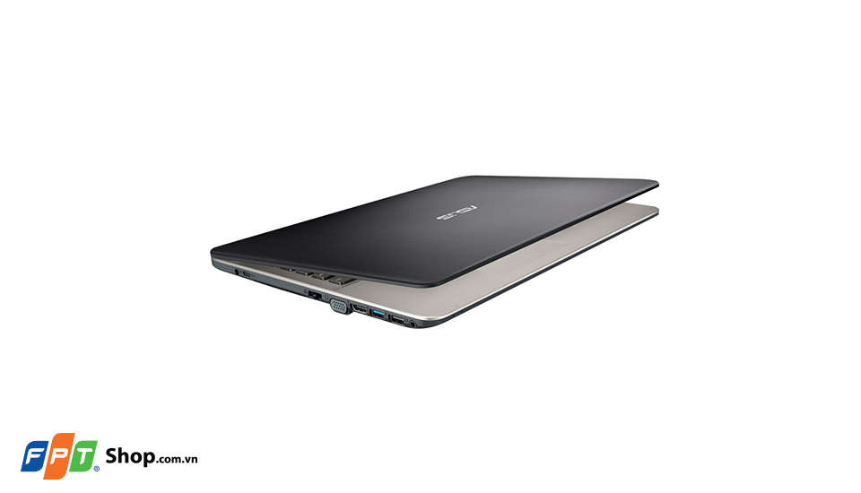
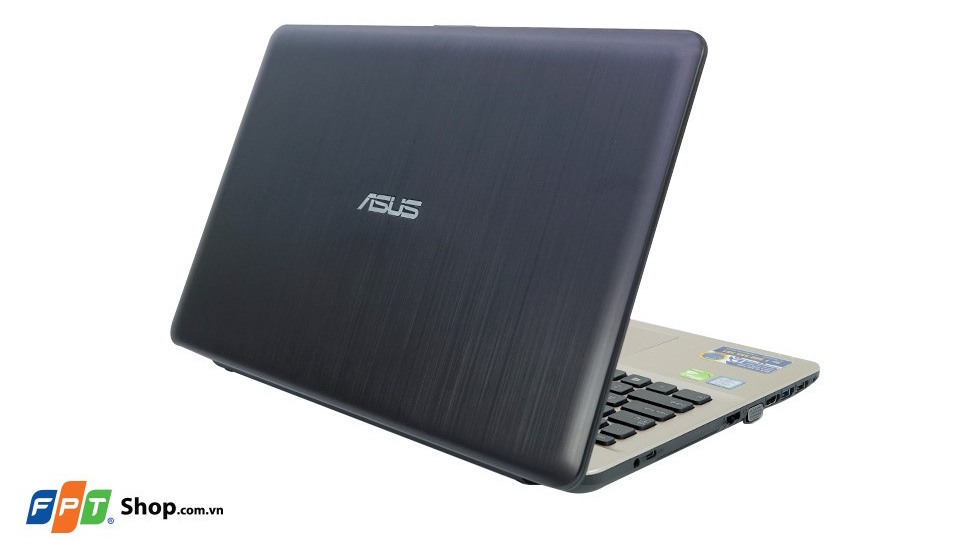
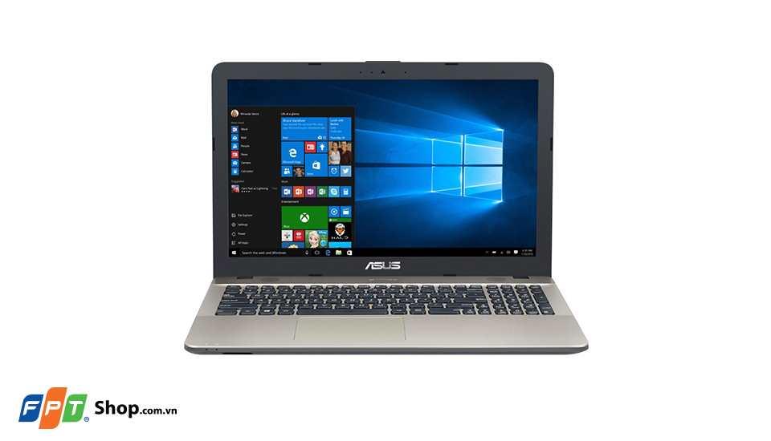
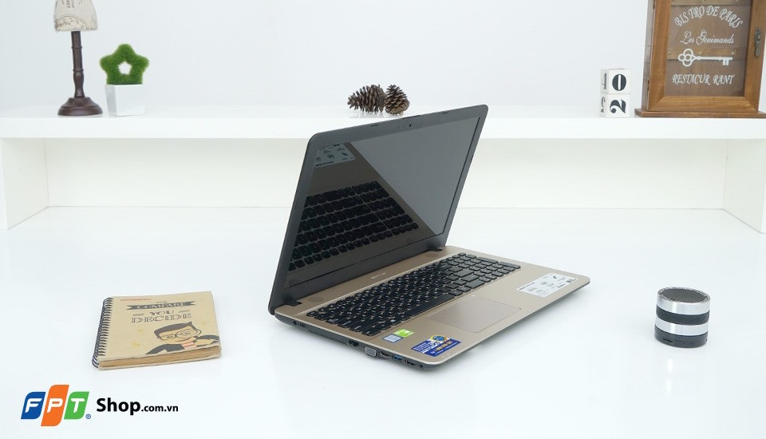
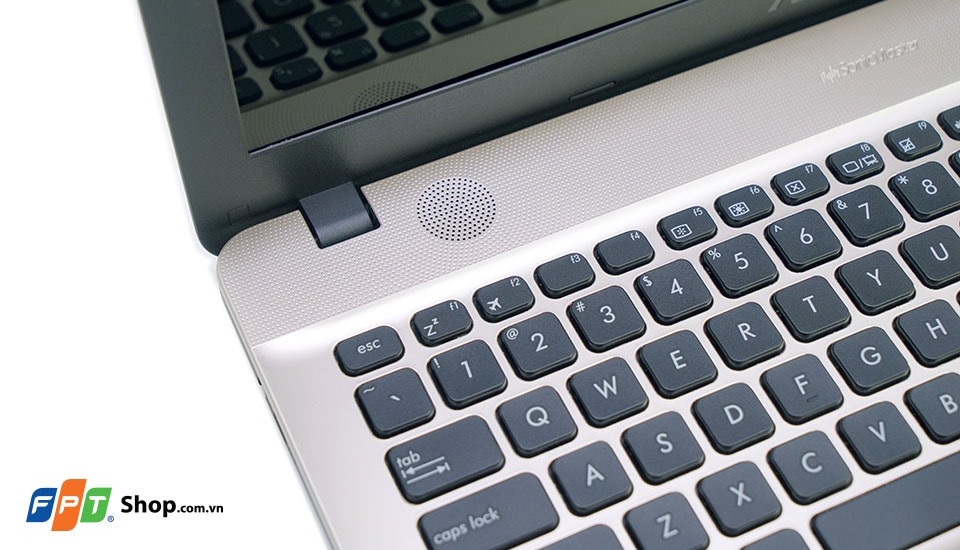
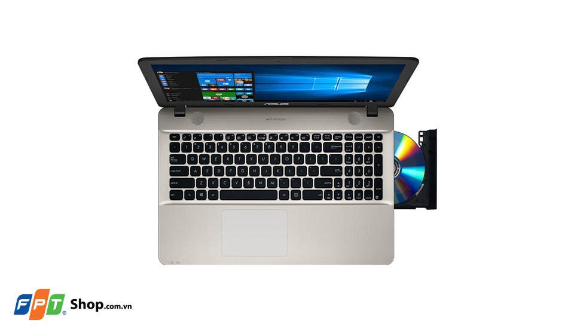
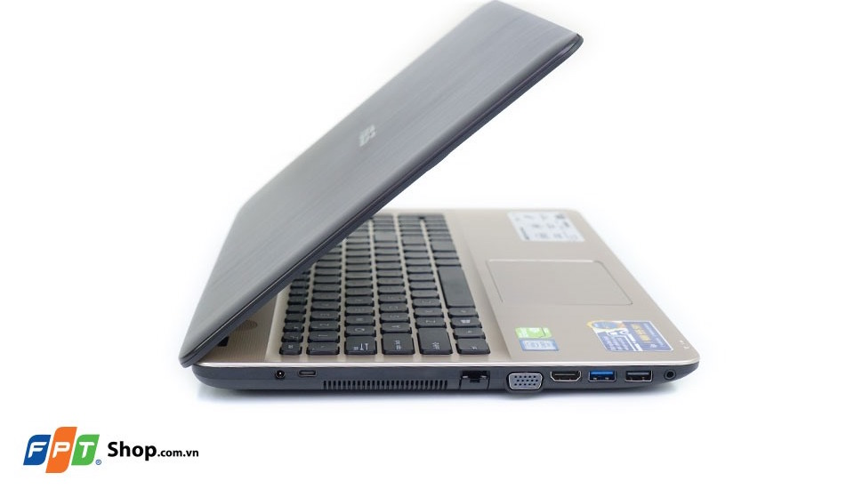

Asus X541UA-XX133D là một chiếc laptop lý tưởng với kế mỏng, tinh tế, trọng lượng nhẹ nhưng lại ở một mức giá hết sức lý tưởng. Bên cạnh đó, màn hình lớn 15.6 inch cùng công nghệ True2life tăng 150% độ tương phản và sắc nét khi xem video, hứa hẹn sẽ mang đến những trải nghiệm mới mẻ và ấn tượng.
Thiết kế gọn nhẹ, hoàn thiện tinh tế
Asus X541UA-XX133D có kết cấu chắc chắn, đặc biệt gọn nhẹ với trọng lượng chỉ 1.9 kg cho thiết bị có màn hình lớn 15.6 inch, giúp bạn có thể dễ dàng mang theo bên mình khi ra ngoài làm việc.
Mặt lưng với những đường vân xước nhỏ đặc trưng vừa tạo điểm nhấn giúp máy bớt đơn điệu hơn lại vừa mang lại sự sang trọng và hiện đại. Bên cạnh đó, X540SC còn gây ấn tượng nhờ các góc được bo tròn đều tạo sự cân đối và tinh tế, đồng thời giúp máy trông gọn hơn nhiều so với các sản phẩm khác cùng kích thước màn hình.
Màn hình lớn 15.6 inch rực rỡ
Asus X541UA-XX133D có màn hình rộng đến 15.6 inch, độ phân giải HD 1366 x 768 pixels cùng công nghệ màn hình True2life, giúp tăng 150% độ tương phản và sắc nét khi xem video, hứa hẹn mang lại những trải nghiệm chân thật và sống động.
Hiệu suất mạnh mẽ
Cung cấp sức mạnh cho Asus X541UA-XX133D là bộ vi xử lý Intel Core i5-6198D xung nhịp 2.3 GHz, đi kèm bộ nhớ RAM 4GB, loại RAM DDR4 nâng cấp với tính năng tiêu thụ điện năng thấp hơn, dung lượng cao hơn và cho tốc độ truyền dữ liệu nhanh hơn, giúp máy có thể phản hồi nhanh chóng các tác vụ và chạy đa nhiệm một cách mượt mà nhưng vẫn tiết kiệm pin. Ổ cứng HDD 500 GB cho phép bạn thoải mái lưu trữ tài liệu, phim, ảnh hay cài đặt ứng dụng để luôn sẵn sàng cho cả công việc và giải trí.
Đắm chìm trong âm thanh
Asus X541UA-XX133D có thiết kế loa trực diện 3w, kích thước buồng loa lớn hơn 21%, tăng công suất âm thanh 50% so với các sản phẩm khác. Thiết kế loa đặc biệt này giúp cho người nghe cảm nhận âm thanh rõ ràng với âm bass tốt hơn, mang lại những giây phút thư giãn tuyệt vời nhất.
Khả năng đa kết nối
Asus X541UA-XX133D được trang bị đầy đủ các cổng kết nối thông dụng hiện nay bao gồm ổ đĩa quang, cổng USB 2.0, cổng USB 3.0 tốc độ cao, cổng USB Type-C 3.1 hiện đại cho tốc độ truyền tải lên đến 10GB/s, gấp đôi so với cổng 3.0 thông thường.
Ngoài ra, thiết bị cũng có trình chiếu VGA, HDMI, cổng LAN, jack cắm tai nghe 3.5mm thông dụng, Wifi 802.11b/g/n, khe cắm thẻ nhớ SD, kết nối Bluetooth 4.0 cho bạn dễ dàng chia sẻ dữ liệu từ điện thoại, máy ảnh, kết nối tai nghe, loa không dây.
Bàn phím và touchpad tiện dụng
Asus X541UA-XX133D trang bị bàn phím đạt tiêu chuẩn bàn phím cao cấp với hành trình phím 2.3mm (tiêu chuẩn bàn phím trong các sản phẩm commercial/gaming), có độ nảy ổn định và hạn chế tiếng ồn giúp cho việc nhập liệu trở nên dễ dàng.
Touchpad với công nghệ ASUS Smart Gesture cho bạn khả năng nhập liệu chính xác, mọi thao tác phóng to, thu nhỏ hay cuộn ảnh hoặc trang web sẽ diễn ra dễ dàng như khi bạn dùng chuột rời.